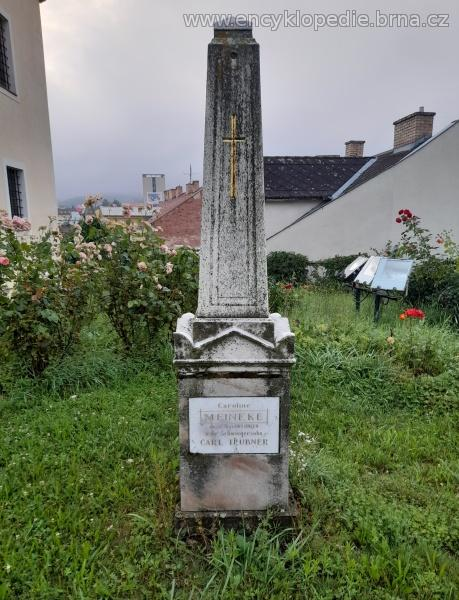
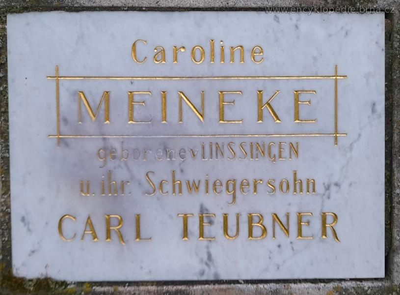

Historické záznamy
Portréty, dobové ilustrace a památník v Blansku




1768 — 1848
„Byla první ženou anglického krále.
A přesto zůstala zapomenuta."
Karolina se narodila v roce 1768 v Hannoveru do šlechtické rodiny Linsingen. Její život se však dramaticky změnil ve chvíli, kdy se zamilovala do budoucího britského krále Viléma IV.
Jejich tajný sňatek, který koruna nikdy nepotvrdila a nakonec popřela, ji odsoudil k životu v bolesti a nakonec i v zapomnění. Tento příběh, ať už je pravdivý či pouhou romantickou legendou, čekal téměř dvě století na to, aby byl znovu vyprávěn.
Portréty, dobové ilustrace a památník v Blansku

